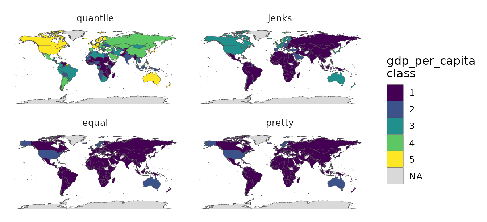
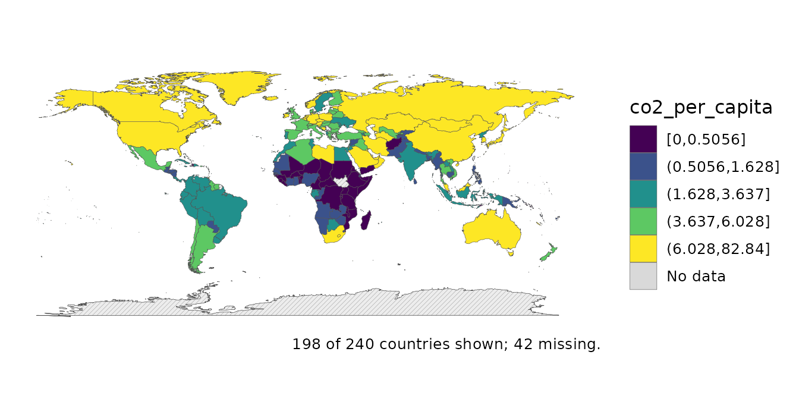
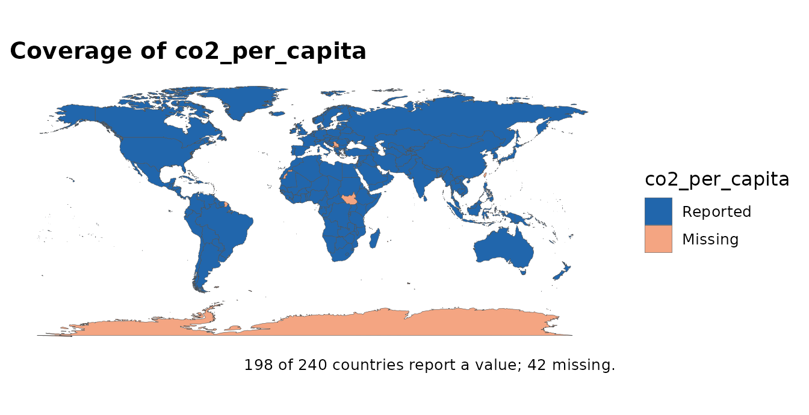
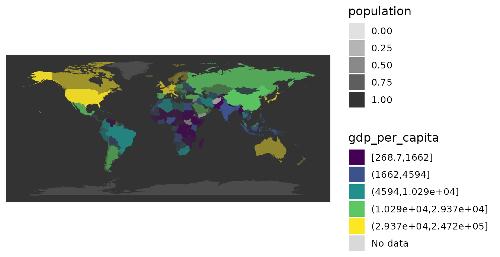
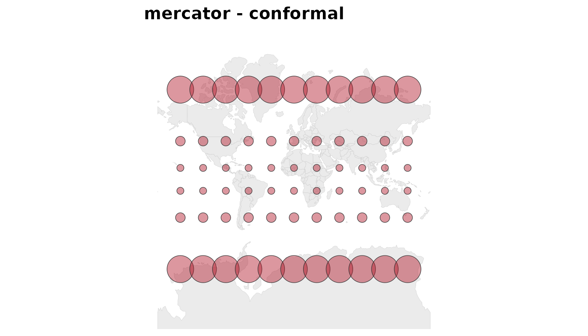
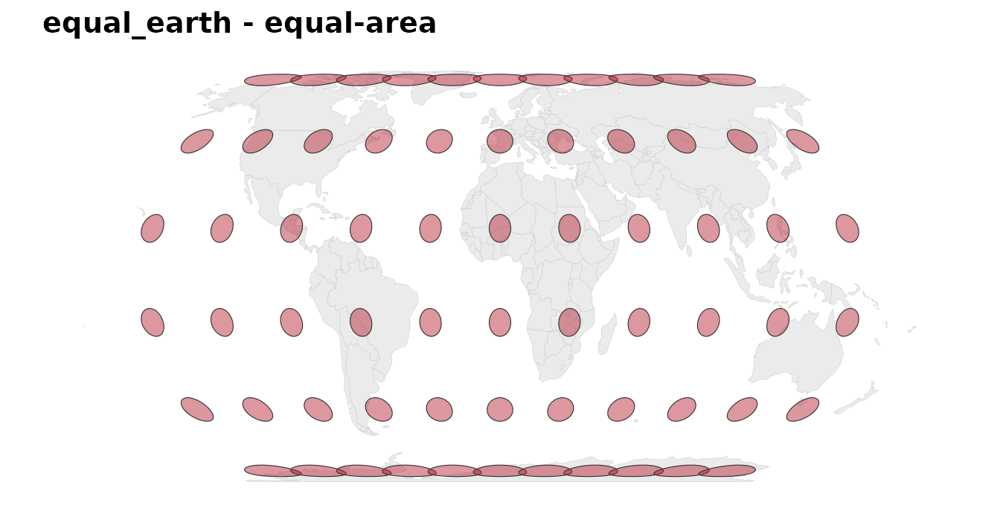
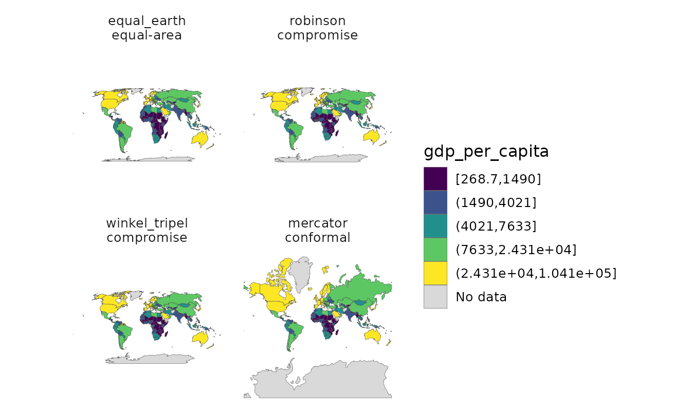
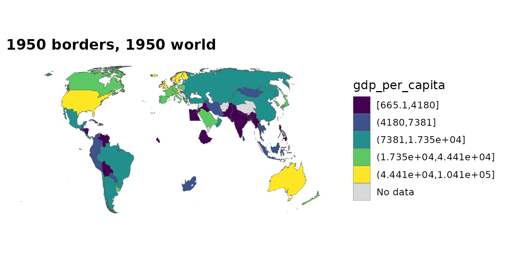

Honest maps: classification, missingness and distortion
Source:vignettes/honest-maps.Rmd
honest-maps.Rmd
mapdf <- attach_geometry(snap, geometry = "polygon")A world choropleth makes four claims before it says anything about
your data: that the classes it drew are the natural ones, that grey
means nothing rather than zero, that a rate over eleven thousand people
is worth as much attention as one over a billion, and that the shapes on
screen are the shapes on the ground. All four are usually false. This
vignette is the tour of what countryatlas gives you for
each.
1. The classification is doing the talking
Brewer & Pickle (2002) ran 56 subjects over nine series of mortality maps and found quantiles among the most accurately read classifications, with natural breaks (Jenks) below 70% as accurate. That is the reverse of the common GIS default, and it matters because the choice is not cosmetic: it decides what the reader concludes.
classify_compare() draws the same data under several
methods at once.
cmp <- classify_compare(mapdf, gdp_per_capita, ncol = 2)
cmp
The picture is only half of it. The counts are attached to the plot:
attr(cmp, "countryatlas_classification")
#> # A tibble: 20 × 4
#> method class n share
#> <chr> <chr> <int> <dbl>
#> 1 quantile [268.7,1662] 38 0.201
#> 2 quantile (1662,4594] 38 0.201
#> 3 quantile (4594,1.029e+04] 37 0.196
#> 4 quantile (1.029e+04,2.937e+04] 38 0.201
#> 5 quantile (2.937e+04,2.472e+05] 38 0.201
#> 6 jenks [268.7,1.312e+04] 123 0.651
#> 7 jenks (1.312e+04,3.484e+04] 37 0.196
#> 8 jenks (3.484e+04,6.771e+04] 23 0.122
#> 9 jenks (6.771e+04,1.221e+05] 5 0.0265
#> 10 jenks (1.221e+05,2.472e+05] 1 0.00529
#> 11 equal [268.7,4.965e+04] 173 0.915
#> 12 equal (4.965e+04,9.903e+04] 13 0.0688
#> 13 equal (9.903e+04,1.484e+05] 2 0.0106
#> 14 equal (1.484e+05,1.978e+05] 0 0
#> 15 equal (1.978e+05,2.472e+05] 1 0.00529
#> 16 pretty [0,5e+04] 173 0.915
#> 17 pretty (5e+04,1e+05] 13 0.0688
#> 18 pretty (1e+05,1.5e+05] 2 0.0106
#> 19 pretty (1.5e+05,2e+05] 0 0
#> 20 pretty (2e+05,2.5e+05] 1 0.00529Equal-interval and pretty breaks put over 90% of countries into a single class, because GDP per capita is strongly right-skewed and the top of the range is one country. A map like that is technically correct and communicates nothing. Quantiles put roughly 38 countries in each class.
You do not need the comparison to get the report — any
classified world_map() will produce it. (A
continuous colourbar has no classes, so asking there returns nothing and
says why.)
p <- world_map(mapdf, gdp_per_capita, style = "quantile",
classification_report = TRUE)
attr(p, "countryatlas_classification")
#> # A tibble: 5 × 4
#> method class n share
#> <chr> <chr> <int> <dbl>
#> 1 quantile [268.7,1662] 38 0.201
#> 2 quantile (1662,4594] 38 0.201
#> 3 quantile (4594,1.029e+04] 37 0.196
#> 4 quantile (1.029e+04,2.937e+04] 38 0.201
#> 5 quantile (2.937e+04,2.472e+05] 38 0.201Jenks still earns its place: on a strongly clustered distribution, quantiles will split a natural group across two colours where Jenks keeps it together. The point is to look, not to take the default.
2. Grey is not a value
The default no-data grey reads as “low” to a lot of readers, which is
precisely the wrong inference. na_style gives you three
alternatives, and "hatched" (via the optional
ggpattern) is the one that survives both colour-blindness
and a black-and-white printer.
world_map(mapdf, co2_per_capita, style = "quantile",
na_style = "hatched", footnote = "auto")
footnote = "auto" writes the coverage line into the
caption, so the map cannot quietly overstate what it covers.
When the missingness is the story, map it directly:
coverage_map(mapdf, co2_per_capita)
audit_coverage() is the same question as a table, and is
the better tool when you want to act on the answer rather than look at
it.
3. Small denominators shout
Any per-capita or per-100k figure computed over a tiny population is mostly noise, and on a choropleth it gets exactly as much ink as a figure computed over a billion people. There are two answers. The cartogram distorts geometry until area matches the denominator; value-by-alpha (Roth, Woodruff & Johnson 2010) leaves the geometry alone and spends opacity instead.
value_by_alpha_map(mapdf, gdp_per_capita, population)
Countries fade toward the background in proportion to how little
population stands behind their number. Compare with the cartogram answer
to the same problem, cartogram_map() /
dorling_map(), in Beyond the choropleth: the
trade-off is that a cartogram makes the weighting unmissable but costs
you the recognisable world.
4. The projection is doing the talking too
Every flat world map distorts something.
projection_info() says what each of the thirteen
preserves:
projection_info()[, c("projection", "property", "equal_area", "conformal")]
#> # A tibble: 13 × 4
#> projection property equal_area conformal
#> <chr> <chr> <lgl> <lgl>
#> 1 equal_earth equal-area TRUE FALSE
#> 2 robinson compromise FALSE FALSE
#> 3 mollweide equal-area TRUE FALSE
#> 4 natural_earth compromise FALSE FALSE
#> 5 plate_carree equidistant FALSE FALSE
#> 6 mercator conformal FALSE TRUE
#> 7 winkel_tripel compromise FALSE FALSE
#> 8 eckert4 equal-area TRUE FALSE
#> 9 gall_peters equal-area TRUE FALSE
#> 10 orthographic perspective FALSE FALSE
#> 11 azimuthal_equal_area equal-area TRUE FALSE
#> 12 north_polar equal-area TRUE FALSE
#> 13 south_polar equal-area TRUE FALSEFor a choropleth the honest choice is equal-area, because the eye reads coloured area as quantity — a projection that inflates Greenland makes Greenland’s value look more important than it is. Equal Earth is the package default and the recommendation (Šavrič, Patterson & Jenny 2019).
subset(projection_info(), equal_area)$projection
#> [1] "equal_earth" "mollweide" "eckert4"
#> [4] "gall_peters" "azimuthal_equal_area" "north_polar"
#> [7] "south_polar"Tissot’s indicatrix makes the cost visible. Each circle has the same radius on the ground; whatever the projection does to them, it is doing to your data.
tissot_map("mercator")
tissot_map("equal_earth")
Mercator keeps every circle round — it is conformal, so local shapes are right — and grows them without limit toward the poles. Equal Earth keeps every circle’s area and shears the shapes instead. Neither is wrong; they are answers to different questions, and only one of them belongs under a choropleth.
To see it on your own data, vary the CRS and hold everything else fixed:
attach_geometry(snap, geometry = "sf") |>
projection_compare(gdp_per_capita, style = "quantile", labeller = "property")
5. Say what the map is
Everything above is a decision, and a published map should carry its
decisions. map_provenance() reads them back off the
plot.
world_map(mapdf, gdp_per_capita, style = "quantile", n_bins = 5,
na_style = "hatched", footnote = "auto") |>
map_provenance()
#>
#> ── countryatlas map provenance
#> package: countryatlas 3.0.0 (snapshot 2024)
#> fill: gdp_per_capita
#> geometry: polygon backend, coord_quickmap
#> classification: quantile, 5 bins
#> missing data: hatched
#> coverage: 189 countries shown, 51 missing
#> breaks: 268.7 | 1662 | 4594 | 10290 | 29370 | 247200Every field there was already known when the plot was built; the only
new thing is that you can read it. Paired with
footnote = "auto" on the plot itself and the classification
report, that is most of a methods note.
Finally, citation("countryatlas") produces the package
citation and the sources it reconciles —
countrycode, the World Bank, Natural Earth, and the papers
behind the methods used here. Citing the join layer without the data
would be the last dishonest thing a map could do.
6. Where the data comes from, and when
Two more ways a country map goes quietly wrong, both added in 3.0.0.
The borders are not the borders. A 1950 map drawn on
2024 boundaries is simply a different world.
attach_geometry(year = ) and [historical_geometry()] draw
the real ones, from CShapes – including the colonies, without which most
of Africa and Asia is absent:
attach_geometry(snap[, c("iso3c", "gdp_per_capita")], year = 1950) |>
world_map(gdp_per_capita, style = "quantile",
title = "1950 borders, 1950 world")
Note what this costs: ISO 3166 was published in 1974 and never
covered colonies, so historical geometry is keyed on Gleditsch-Ward
codes and iso3c is NA for every entity that
never had one. country_join(key = "gwn") is the join that
works before 1970.
Membership is a function of time. A snapshot silently misstates any panel that spans an accession:
7. Islands are not missing at random
morans_i()’s default weights are land-border contiguity,
and an island has no land border. On the bundled snapshot that silently
removes a quarter of the countries with data – Japan, Australia,
Madagascar, New Zealand, the Philippines, Cuba, Sri Lanka, Iceland and
every small island state. They are not a random quarter.
Not every island goes, either: the United Kingdom keeps its land border with Ireland, and Indonesia keeps its borders with Malaysia, Papua New Guinea and Timor-Leste. Which is rather the point – you cannot tell from the finished map who dropped out of the statistic.
rbind(
contiguity = morans_i(snap, gdp_per_capita, n_perm = 0)[c("i", "n", "n_excluded")],
knn = morans_i(snap, gdp_per_capita, n_perm = 0,
weights = country_weights("knn", k = 5))[c("i", "n", "n_excluded")]
)
#> # A tibble: 2 × 3
#> i n n_excluded
#> * <dbl> <int> <int>
#> 1 0.607 142 49
#> 2 0.472 189 2Both numbers are defensible; only one of them is global.
country_weights() also takes "distance", and
"custom" – which is how an adjacency that is not geographic
at all (trade volume, migration, shared language) goes through the same
API.
References
Brewer, C. A. & Pickle, L. (2002). Evaluation of methods for classifying epidemiological data on choropleth maps in series. Annals of the Association of American Geographers 92(4), 662–681.
Roth, R. E., Woodruff, A. W. & Johnson, Z. F. (2010). Value-by-alpha maps: an alternative technique to the cartogram. The Cartographic Journal 47(2), 130–140.
Šavrič, B., Patterson, T. & Jenny, B. (2019). The Equal Earth map projection. International Journal of Geographical Information Science 33(3), 454–465.